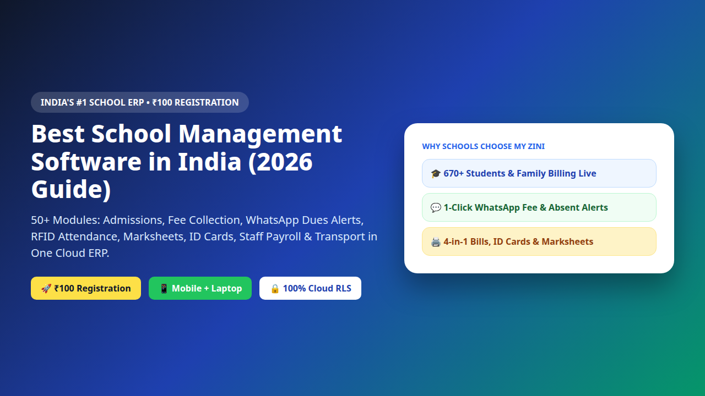
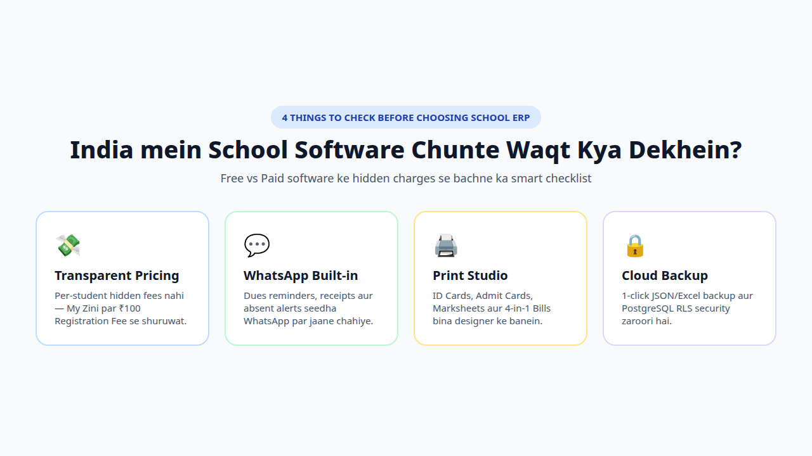
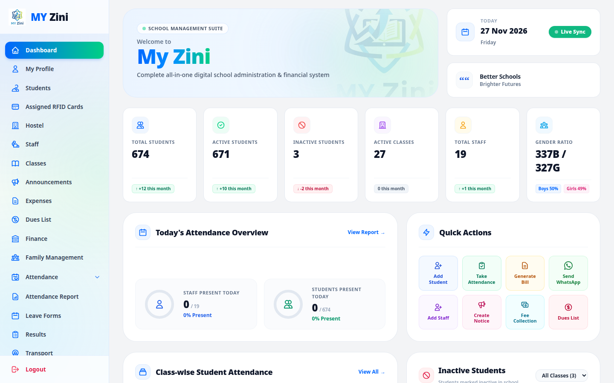
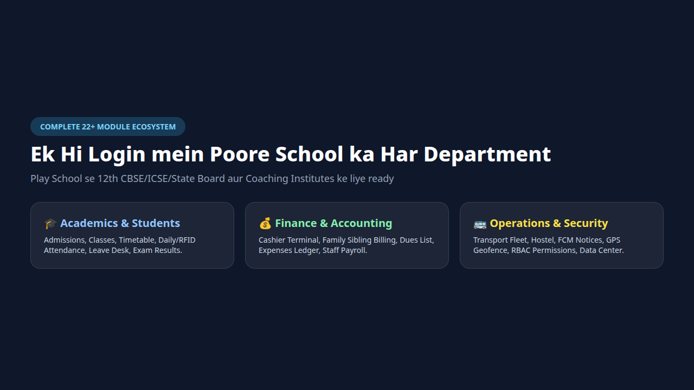
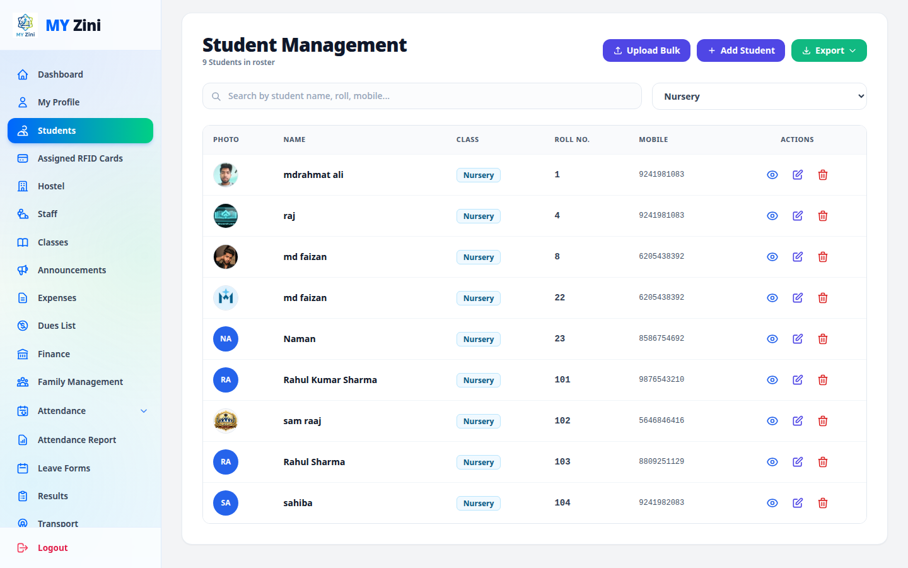
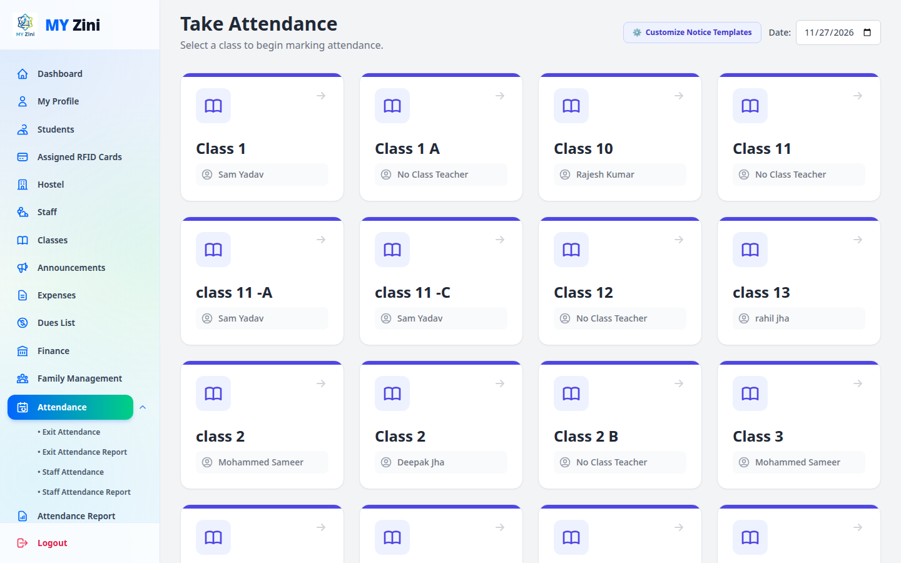
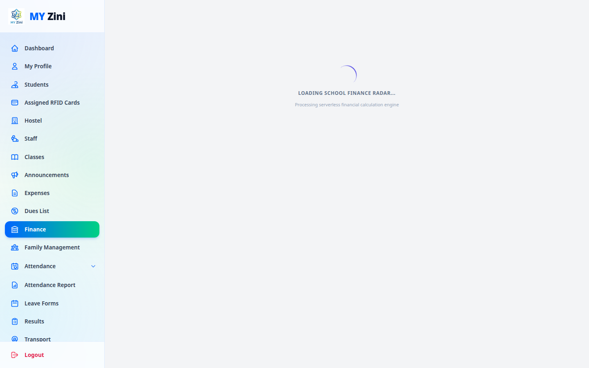
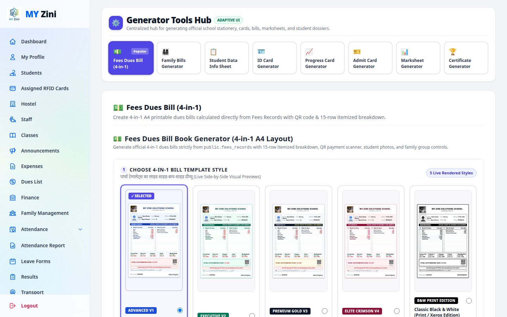
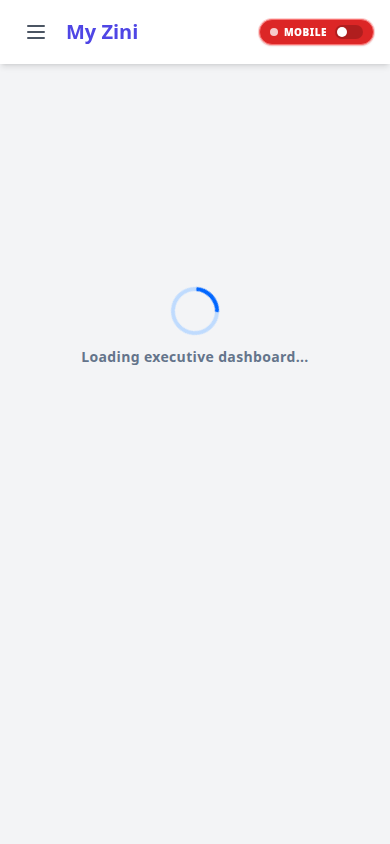
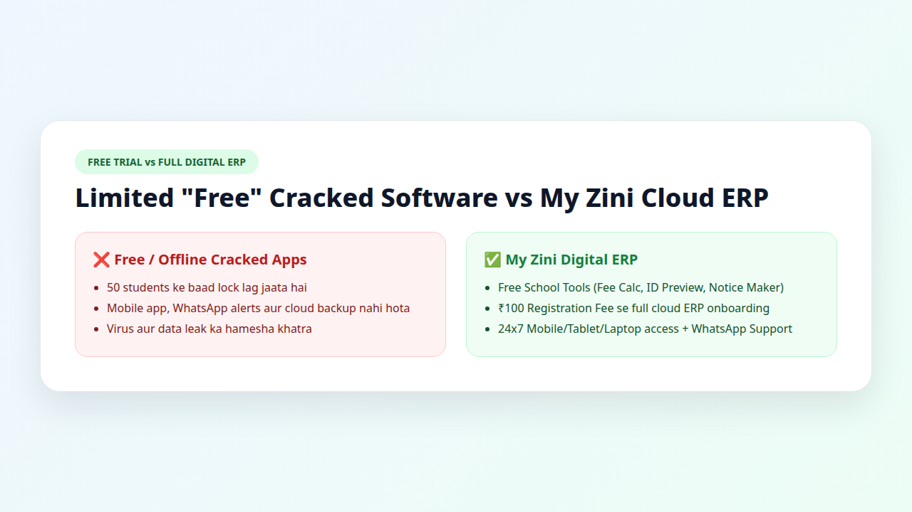

Best Free & Low-Cost School Management Software in India (2026) — My Zini Digital ERP Complete Guide
Aaj ke digital zamane mein har school, play school aur coaching institute chahta hai ki unka admission register, fee collection, daily attendance, ID card printing aur WhatsApp reminders sab kuch computer aur mobile par automated ho jaaye. Lekin jab school principals Google par "best free school management software india" search karte hain, toh unhe aksar aise softwares milte hain jo ya toh 50 students ke baad lock ho jaate hain ya ₹50,000+ per year charge karte hain! Is complete Hinglish buyer's guide mein humne My Zini Digital ERP (sirf ₹100 Registration Fee + Free School Tools) ko live test karke 8 real module screenshots ke saath dikhaya hai ki ek ideal Indian School ERP kaisa hona chahiye.

⚡ TL;DR — Quick Summary (AI & Reader Snapshot)
- Affordable Onboarding: Sirf ₹100 Registration Fee mein complete cloud school setup + Free interactive tools (Fee Calculator, ID Card Preview, Notice Maker).
- Live Scale Proven: Live portal par
674 Students,27 Active Classes,19 Staff, aur816+ Verified Recordssmoothly run ho rahe hain. - Core Modules Included: Dashboard, Students, RFID Attendance, Finance Command Center, Cashier Terminal, Family Sibling Billing, WhatsApp Dues List, Exam Results, Generator Studio, Transport, Leave Forms, Data Center.
- Device Support: 100% Mobile (
390px), Tablet (768px) aur Laptop (1366px+) responsive with Light & Dark Themes.
1. School Management Software Chunte Waqt Kaunsi 4 Baatein Zaroor Check Karein?
Kisi bhi free ya paid school ERP ko finalize karne se pehle har Principal aur Director ko yeh 4 critical points verify karne chahiye:

2. Live School Dashboard: 674+ Students aur Real-Time KPIs Ek Nazar Mein
My Zini Digital ERP ke Dashboard par login karte hi Principal ko TOTAL STUDENTS (674), ACTIVE STUDENTS (671), ACTIVE CLASSES (27), TOTAL STAFF (19), GENDER RATIO (337B / 327G), 8 Quick Actions aur 6 Analytics Charts ek hi screen par milte hain.

3. Complete 22+ Module Ecosystem: Admissions se Marksheets & WhatsApp Dues Tak
Bahut se free softwares sirf student list save karte hain, lekin My Zini Digital ERP mein aapko poore school ke har department ka automation milta hai:






4. Mobile App Experience aur "Free" Offline Software se Tulna
Offline desktop software sirf office computer par chalta hai, jabki My Zini Digital ERP aapke smartphone (390px viewport), tablet aur laptop par bina kisi installation ke live chalta hai.


Feature Comparison Table: My Zini Digital ERP vs Traditional Software
| Feature | My Zini Digital ERP | Traditional / Free Offline Apps |
|---|---|---|
| Starting Cost | ₹100 Registration Fee + Free Tools | Hidden per-student fees / 50 student lock |
| WhatsApp Dues Alerts | Built-in 1-Click & Family Statements | Paid SMS packs alag se lene padte hain |
| ID Cards & 4-in-1 Bills | 20+ Vector Templates (75% Paper Saving) | External designer ko paise dene padte hain |
| Mobile + Tablet Access | 100% Cloud Responsive + GPS Geofence | Sirf ek office PC par chalta hai |
| Data Security & Backup | PostgreSQL RLS + 1-Click JSON Backup | PC kharab hone par data loss ka khatra |
Frequently Asked Questions (FAQs)
1. Kya chhote schools (100–300 students) ke liye bhi My Zini Digital ERP sahi hai?
Haan bilkul! Chhote aur growing schools ke liye yeh sabse best hai kyunki aapko sirf ₹100 Registration Fee se shuruwat karni hoti hai aur aapko woh saare enterprise tools (ID cards, 4-in-1 bills, WhatsApp alerts) milte hain jo bade schools lakhon rupaye kharch karke use karte hain.
2. Kya My Zini Digital ERP mein Free Tools bina login ke bhi use kiye ja sakte hain?
Haan! digitalerp.shop website par aapko Free School Tools (jaise School Fee Calculator, ID Card Previewer, aur Notice Generator) milte hain jinhe koi bhi school free mein use kar sakta hai.
3. School ka purana Excel data is ERP mein kaise shift karein?
Aap Data Center VAULT (/data-center) ke Sample JSON Templates use karke apne purane Excel data ko 5 minute mein bulk upload kar sakte hain, ya support@digitalerp.shop par bhejkar free onboarding help le sakte hain.
4. Kya CBSE, ICSE aur State Board (Bihar, UP, MP, Rajasthan) sabhi ke liye kaam karta hai?
Haan! Aap /classes mein apni custom classes (Nursery se 12th tak) aur /results mein apna board-specific grading scale aur passing criteria khud configure kar sakte hain.
5. Kya Teachers ko alag login milta hai jahan woh sirf apni class dekh sakein?
Haan! Settings (/settings) ke Role-Based Access Control (RBAC) mein aap har teacher ke liye Class-Wise Permissions set kar sakte hain taaki woh sirf apni assigned class ki attendance aur marks dekh sakein.
6. 4-in-1 Dues Bill se school ke kitne paise bachte hain?
Ek A4 sheet par 4 bills print hone se paper aur printer ink ka kharcha lagbhag 75% tak kam ho jaata hai, aur QR code hone se parents turant online ya counter par fees jama kar dete hain.
7. Kya Student aur Parent ke liye bhi alag portal/app hota hai?
Haan, har student ko admission ke waqt password milta hai jisse parents apne mobile par attendance, school notices, exam results aur pending fee ledger live dekh sakte hain.
8. RFID Smart Attendance ke liye kya alag hardware lena padta hai?
Aap normal 1-tap browser/mobile attendance bina kisi hardware ke free mein chala sakte hain, aur jab chahein tab /assigned-rfid-cards ke through RFID gate scanner connect kar sakte hain.
9. Apne school ke liye My Zini Digital ERP kaise shuru karein?
Aap Digital ERP Registration Form par jaakar sirf ₹100 Registration Fee ke saath apna school register kar sakte hain aur 7-Step Setup Roadmap se 19 minutes mein live ho sakte hain.
10. Agar koi technical problem aaye toh support kaise milta hai?
Software ke andar hi /how-to-use Help Desk par aapko 💬 WhatsApp Live Support (+91 8809251129) aur Email (support@digitalerp.shop) ka direct button milta hai.
11. Kya Play School aur Coaching Institutes bhi ise use kar sakte hain?
Bilkul! Live portal par bhi Play (₹6500), Nursery, LKG, UKG aur Graduation batches ek saath chal rahe hain — yani Play Schools, K-12 Schools aur Coaching Centers teeno ke liye 100% fit hai.
12. Kya Family Sibling Discount aur Advance Fund bhi track hota hai?
Haan! Family Management (/family-management) mein ek hi parivaar ke sabhi bachchon ko link karke combined billing, sibling discount, advance credit aur WhatsApp family statement bheja ja sakta hai.
13. Kya Staff Salary aur School Expenses ka hisab bhi yahin hota hai?
Haan! /staff aur /staff-attendance se teachers ki salary aur late/absent fine manage hote hain, aur /expenses mein bijli bill, diesel, stationery aur events ka daily kharcha record hota hai.
14. Kya Internet slow hone par bhi My Zini ERP tez chalta hai?
Haan, 2-hour smart caching aur lightweight cloud architecture ki wajah se 674+ students aur 160+ family records 4G mobile network par bhi 1 second mein load ho jaate hain.
15. Kya School ki GPS Location se Teachers ki attendance control hoti hai?
Haan! My Profile (/profile) par Campus GPS Geofence set karne se teachers Android App ke through sirf school campus ke andar se hi check-in mark kar sakte hain.
16. "Best Free School Management Software" dhoondhte waqt kaunse hidden traps se bachna chahiye?
Bahut se software "100% Free" likhkar aapko download karwate hain, lekin jab aap 50 se zyada students add karte hain ya Marksheet/ID Card print karne jaate hain toh "Upgrade to Pro ₹25,000" ka popup aa jaata hai. Doosra bada trap hota hai offline Windows software jisme cloud backup nahi hota aur computer format hone par poore saal ka fee data gayab ho jaata hai. My Zini Digital ERP mein aapko shuruwat se hi transparent ₹100 Registration Fee aur clear cloud architecture milta hai.
17. Kya Coaching Centers aur Tuition Batches bhi My Zini ERP use kar sakte hain?
Haan bilkul! Coaching centers apni batches (jaise JEE Batch, NEET Foundation, Class 10 Board Batch) ko /classes mein create kar sakte hain, monthly fee set kar sakte hain, aur /assigned-rfid-cards ya /attendance se batch-wise attendance aur WhatsApp absent alerts bhej sakte hain.
18. Play Schools aur Nursery Schools ke liye isme kaunse khaas features hain?
Play schools mein parents ke saath daily communication sabse zaroori hota hai. My Zini ke Announcements FCM Hub (/announcements) se aap Holiday/Chhutti, PTM, aur Annual Day ke instant push notifications bhej sakte hain, aur Generator Tools se chhote bachchon ke colorful ID Cards aur Progress Reports print kar sakte hain.
19. Kya School Transport (Bus/Van) aur Driver Salary bhi isi software mein manage hoti hai?
Haan! Transport FLEET (/transport) mein aap apne sabhi bus/van drivers ko Aadhar, Driving Licence, Vehicle Number aur Route ke saath register kar sakte hain. Isme Monthly Fixed Salary ke saath-saath Per Student Per Day Rate scheme bhi milti hai, aur har driver card par direct Call aur 💬 WhatsApp icon hota hai.
20. School Expenses (Bijli Bill, Diesel, Stationery) aur Fee Collection ka Net Profit kaise dekhein?
Aap Finance Command Center (/finance) mein total fee inflow dekh sakte hain aur Expense Management (/expenses) mein 9 Quick Suggestions (Electricity, Stationery, Repairs, Fuel, Mess, Events) ke saath har bill record kar sakte hain. Dono ko milakar school management ko har mahine clean Profit & Loss visibility milti hai.
21. Kya Exam Results aur Custom Marksheets bina designer ke ban sakti hain?
Bilkul! Exam Results (/results) mein aap Unit Test, Half-Yearly aur Annual Exams create karke marks enter karte hain, aur phir Generator Tools (/generator-tools) ke 19 Marksheet layouts aur Canva-style Custom Marksheet Designer se school logo aur principal signature ke saath PDF marksheet print kar sakte hain.
22. Kya Parents ko har mahine alag-alag bachchon ke liye alag message bhejna padta hai?
Nahi! Agar ek hi parivaar ke 2, 3 ya 4 bachche aapke school mein padhte hain, toh Family Management (/family-management) mein unhe ek Family Token ke andar link kar dein. Phir sirf ek click mein Send WhatsApp Statement dabakar aap sabhi siblings ka combined hisab parent ko bhej sakte hain.
23. Kya Leave Applications (Chhutti ki Arzi) bhi online manage hoti hain?
Haan! Leave Forms DESK (/leave-management) par Students aur Staff dono digital leave applications submit kar sakte hain — medical proof attachment aur digital signature ke saath — jinhe Principal 1 click mein Approve, Reject ya Reset kar sakte hain.
24. Kya school ka poora data kabhi bhi Excel ya JSON mein wapas download kiya ja sakta hai?
Haan, 100% Data Ownership! /students aur /staff se aap Excel (XLSX) / CSV export kar sakte hain, aur Data Center VAULT (/data-center) se 1-click mein poore school ke sabhi 8 modules ka complete JSON backup apne computer par download kar sakte hain.
25. My Zini Digital ERP par naya school setup karne mein kul kitna samay lagta hai?
Built-in How to Use HELP DESK (/how-to-use) ke 7-Step Setup Roadmap ke mutabik, aap sirf 19 minutes mein apna School Logo, Classes, Staff, Students, Monthly Fees aur ID Card printing sab kuch live chalu kar sakte hain!
26. Kya My Zini Digital ERP mein "AI Query Helper" Hindi aur English dono mein sawalon ke jawab deta hai?
Haan! Built-in AI Query Helper mein Principal seedha Hindi/Hinglish mein pooch sakte hain — jaise "Class 10 me kitne students ki fees baki hai?" ya "Today staff attendance" — aur system live PostgreSQL database se turant exact figures nikal kar de deta hai.
27. Cashier Terminal (/shortcut) aur Finance (/finance) ek saath kaise kaam karte hain?
Fee counter par rapid billing ke liye operator Cashier Terminal (/shortcut) mein Class + Roll Number ⚡ Fetch use karke 10 seconds mein payment lete hain, aur uska live financial summary Finance Command Center (/finance) ke Jan–Dec matrix aur Today's Inflow mein turant reflect hota hai.
28. Kya "Apply Monthly Fees" mein har mahine ek-ek karke fees lagani padti hai?
Nahi! Mahine ki 1 tarikh ko aap Apply Monthly Fees tab mein Target Month chunn kar All classes select karein — strict duplicate prevention ke saath poore school ke sabhi 670+ students par 1 click mein monthly tuition dues apply ho jaati hain.
29. Kya Bihar, UP, Delhi, MP aur Rajasthan ke schools ke liye WhatsApp Support available hai?
Bilkul! Poore India ke schools ke liye My Zini ki dedicated support team +91 8809251129 (WhatsApp) aur support@digitalerp.shop par data import, template customization aur training ke liye hamesha available rehti hai.
30. Kya hum pehle demo dekh kar phir apne school ke liye registration karein?
Haan, aap digitalerp.shop par saare features aur free tools check kar sakte hain, aur phir sirf ₹100 Registration Fee ke saath apna official school portal activate kar sakte hain.
31. Kya My Zini Digital ERP mein Staff Attendance aur Leave Forms bhi included hain?
Haan! /staff-attendance aur /staff-attendance-report par Morning Entry, Staff Exit, Late Present tracking milti hai, aur /leave-management par Students aur Staff dono ki digital leave applications signature aur proof ke saath approve hoti hain.
32. Kya school ka logo, principal signature aur board code har PDF par automatically aata hai?
Bilkul! Jab aap My Profile (/profile) par ek baar apna transparent PNG school logo, Principal Name aur Board Affiliation Code save kar dete hain, toh sabhi ID cards, fee receipts, admit cards aur marksheets par automatically print hota hai.
Final Verdict: Kyun Chunein My Zini Digital ERP?
1. Zero Risk Onboarding (₹100 Fee)
Lakho rupaye advance dene ke bajaye sirf ₹100 Registration Fee ke saath live cloud ERP test karein aur apna school digital banayein.
2. Complete All-in-One Suite
Admissions, Attendance, Fees, WhatsApp Recovery, Marksheets, ID Cards, Transport, Staff Payroll aur Cloud Backup sab kuch ek hi jagah.
3. 75% Paper & Printing Savings
4-in-1 compact dues bills aur digital WhatsApp fee receipts se school ki har mahine hazaron rupaye ki stationary bachti hai.
4. 100% Mobile & Tablet Ready
Chahe office PC ho ya Principal ka smartphone, har module bina kisi app crash ke smoothly responsive chalta hai.
Pro Tip: Shuruwat karne ke liye aaj hi Register (₹100 Fee) par click karein ya +91 8809251129 par WhatsApp karke live school demo dekhein!